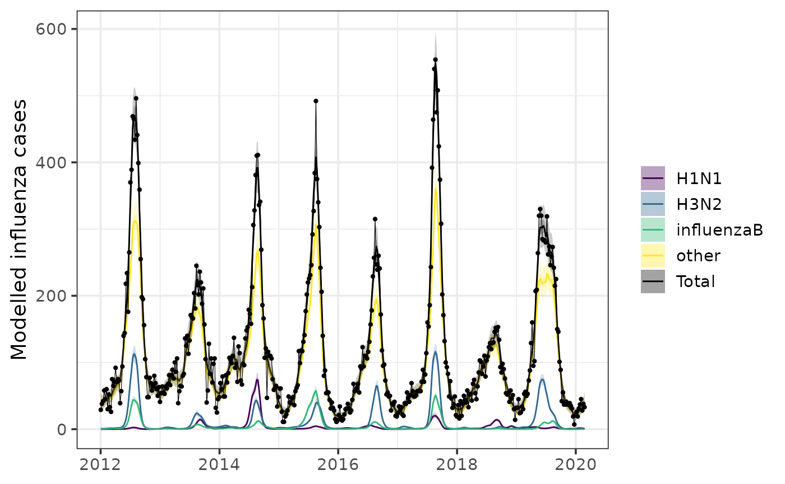
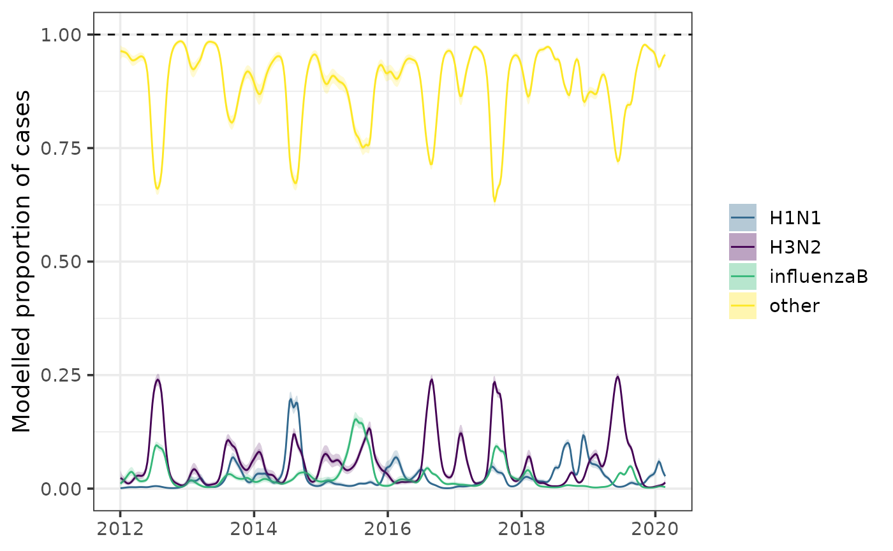

EpiStrainDynamics extends an existing statistical modelling framework capable of inferring the trends of up to two pathogens. The modeling framework has been extended here to handle any number of pathogens; fit to time series data of counts (eg, daily number of cases); incorporate influenza testing data in which the subtype for influenza A samples may be undetermined; account for day-of-the-week effects in daily data; include options for fitting penalized splines or random walks; support additional (optional) correlation structures in the parameters describing the smoothness of the penalized splines (or random walks); and account for additional (optional) sources of noise in the observation process.
Step 1: Construct model
These modelling specifications are specified using the
construct_model function. The correct stan model is then
applied based on the specifications provided.
construct_model() takes three arguments:
method, pathogen_structure, and
dow_effect. We will break these down one by one.
Method
EpiStrainDynamics has pre-compiled stan models that fit either with
bayesian penalised splines or random walks. These are specified using
the method argument of construct_model() as
functions, either with random_walk() or
p_spline(). The penalised spline model has two further
options to specify: spline_degree is the polynomial degree
of the individual spline segments used to construct the overall curve
(must be a positive whole number) and days_per_knot, which
is the number of days for each knot (must also be a positive whole
number).
So we may specify:
mod <- construct_model(
method = random_walk(),
...
)
# OR
mod <- construct_model(
method = p_spline(spline_degree = 3, days_per_knot = 2), # example options
...
)Pathogen structure
There are three main types of pathogen structure available to model:
single(), multiple(), and
subtyped().
The single() pathogen structure is the simplest and
models a single pathogen timeseries. A vector is the case timeseries is
provided to the argument case_timeseries, a vector of date
or time labels is provided to time, and optionally a
pathogen name can be assigned with pathogen_name. It can be
specified as follows, illustrated using data provided with the package
sarscov2:
single(
case_timeseries = sarscov2$cases, # timeseries of case data
time = sarscov2$date, # date or time variable labels
pathogen_name = 'SARS-COV-2' # optional name of pathogen
)The multiple() and subtyped() pathogen
structures both also have the case_timeseries and
time arguments, as in the single()
structure.
In addition to these two arguments, instead of a single argument for
pathogen_name, multiple() and
subtyped() have one or more arguments that allow the user
to define the names and data for the different components or subtypes to
be modelled. For multiple(), these are specified as a named
list with the argument component_pathogen_timeseries. The
names in this list will be using in subsequent plotting. For
subtyped(), which allows the user to incorporate testing
data for influenza A subtypes, a vector of total unsubtyped influenza A
cases is specified with influenzaA_unsubtyped_timeseries, a
named list of the subtyped influenza A timeseries is provided to
influenzaA_subtyped_timeseries, and further pathogens are
provided in a named list to other_pathogen_timeseries.
In addition to specifying the data and pathogen names,
multiple() and subtyped() both allow the user
to modify the correlation structures in the parameters describing the
smoothness (with argument smoothing_structure) and account
for additional sources of noise in the observation process
(observation_noise). smoothing_structure is
either 'shared' (all pathogens have the same smoothness),
'independent' (each pathogen has completely independent
smoothing structure), or 'correlated' (smoothing structure
is correlated among pathogens). observation_noise is either
'observation_noise_only' (only includes observation noise -
the same between pathogens) or 'pathogen_specific_noise'
(includes noise in individual pathogens as well).
Example pathogen structure specification for multiple pathogens model:
multiple(
case_timeseries = sarscov2$cases, # timeseries of case data
time = sarscov2$date, # date or time variable labels
component_pathogen_timeseries = list( # named list of component pathogens
alpha = sarscov2$alpha,
delta = sarscov2$delta,
omicron = sarscov2$omicron,
other = sarscov2$other
),
smoothing_structure = 'independent', # correlation structures
observation_noise = 'observation_noise_only' # observation noise
)Example pathogen structure specification for subtyped model:
subtyped(
case_timeseries = influenza$ili, # timeseries of case data
time = influenza$week, # date or time variable labels
influenzaA_unsubtyped_timeseries = influenza$inf_A, # unsubtyped influenzaA
influenzaA_subtyped_timeseries = list( # named list of subtyped infA
H3N2 = influenza$inf_H3N2,
H1N1 = influenza$inf_H1N1
),
other_pathogen_timeseries = list( # named list of other pathogens
influenzaB = influenza$inf_B,
other = influenza$num_spec - influenza$inf_all
),
smoothing_structure = 'correlated', # correlation structures
observation_noise = 'pathogen_specific_noise' # observation noise
)Day of week effect
Day of week effect is specified as a logical (TRUE or
FALSE) to the dow_effect argument. In plotting
the day of week effect can be selectively removed.
mod <- construct_model(
method = ...,
pathogen_structure = ...,
dow_effect = TRUE
)The constructed model object is a named list containing input data,
accessed with $data, parameter values (such as smoothing
structure, observation noise, and penalised spline parameters, if
appropriate), accessed with model_params, names of provided
pathogens, accessed with pathogen_names, and record of
whether day of week effect has been selected, accessed with
dow_effect.
Step 2: Fit model
The model estimates the expected value of the time series (eg, a
smoothed trend in the daily number of cases accounting for noise) for
each individual pathogen. Model parameterisation decisions specified
when constructing the model in step 1 mean the correct stan model will
be applied at this stage by simply calling fit_model() onto
the constructed model object.
fit <- fit_model(
mod,
iter = 2000,
warmup = 1000,
chains = 3
)The output of this function is a list with the stan fit object,
accessed with $fit, and the elements of the constructed
model object from the previous step, accessed with
$constructed_model.
Step 3: Calculate and explore epidemiological quantities
The package provides helper functions to calculate a number of useful
epidemiological quantities. The output of these methods functions are a
named list containing a data frame of the outcome quantity
($measure), the fit object ($fit), and the
constructed model object ($constructed_model).
measure is a data frame containing the median of the
epidemiological quantity (y), the 50% credible interval of
the quantity (lb_50 & ub_50), the 95%
credible interval (lb_95 & ub_95), the
proportion greater than a defined threshold value (prop),
the pathogen name (pathogen), and the time label
(time).
Calculate epidemic growth rate with growth_rate():
gr <- growth_rate(fit)
head(gr$measure)
#> pathogen pathogen_idx y lb_50 ub_50 lb_95
#> 1 Total NA 0.04364669 -0.004626721 0.09286704 -0.09057447
#> 2 Total NA 0.04244122 0.003494425 0.08235507 -0.06957527
#> 3 Total NA 0.03865740 0.009132841 0.06940558 -0.04841384
#> 4 Total NA 0.03455839 0.009494718 0.05859149 -0.03927875
#> 5 Total NA 0.02956028 0.006712849 0.05401441 -0.04135839
#> 6 Total NA 0.02681889 0.005505214 0.04880145 -0.03560814
#> ub_95 prop time
#> 1 0.18169422 0.7276667 2012-01-09
#> 2 0.15822800 0.7690000 2012-01-16
#> 3 0.13187820 0.8120000 2012-01-23
#> 4 0.11107926 0.8276667 2012-01-30
#> 5 0.10211519 0.7993333 2012-02-06
#> 6 0.09099174 0.8003333 2012-02-13
plot(gr)Calculate effective reproduction number over time with
Rt() (requiring specification of a generation interval
distribution):
Calculate incidence with or without a day of week effect with
incidence():

Calculate proportions of different combinations of cases attributable
to different pathogens/subtypes using proportion(). By
default, the function will return a dataframe with proportions of each
pathogen or subtype out of all pathogens/subtypes. Alternatively, one
can specify a selection of pathogens/subtypes by their names in the
named lists provided to construct_model():
prop <- proportion(
fit,
numerator_combination = c('alpha', 'delta', 'omicron'),
denominator_combination = c('alpha', 'delta', 'omicron', 'other')
)
prop <- proportion(fit)
plot(prop)